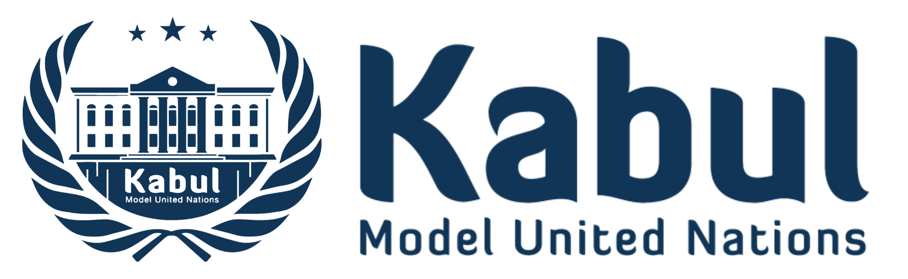
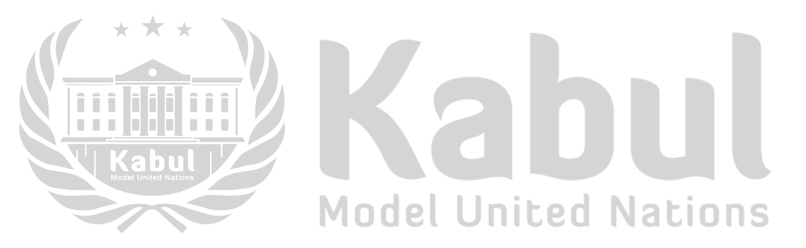

Kabul Model United Nations
Role: Founder
Distinction: The first MUN initiative in Afghanistan


At just 22, Yahya Qanie founded Kabul Model United Nations - Afghanistan's first MUN platform - while still an undergraduate. At a time when young Afghans were being pulled toward extremism or left with very few platforms for civic participation, he offered an alternative: global citizenship, constructive dialogue, and public leadership.
Launched in 2016, Kabul MUN became a space for young Afghans to simulate UN committees, debate global challenges, and build skills in research, negotiation, critical thinking, and diplomacy. For many participants, it was their first time engaging with ideas beyond their own communities - and imagining themselves as agents of change.
Under Yahya's leadership, the initiative organized five annual international conferences, hosted over 3,500 delegates, introduced the country's first MUN Guide, and partnered with MUNs across Europe, Central Asia, and South Asia. In 2018, it became part of the United Nations Association of Afghanistan.
Beyond its annual events, Kabul MUN helped seed a culture in Afghanistan's youth community - one that prioritized inclusion, dialogue, and promoting Sustainable Development Goals. With 41% female participation, it also set a benchmark for inclusive youth engagement in a difficult environment.
By 2021, Kabul MUN had sparked a nationwide movement: 140 organizations and universities across 17 provinces had launched their own MUNs, drawing the U.S. Embassy in Kabul to create Afghanistan's first MUN grant program. Though suspended after the collapse of the Afghan government in 2021, it remains a powerful example of youth-led innovation.